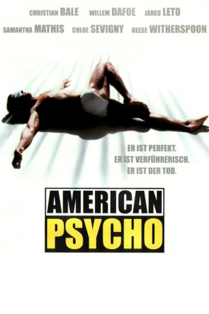

#8175 American Psycho
 
 IMDB-Wertung: 7.6 / 10
IMDB-Wertung: 7.6 / 10  Tomatometer: 68
Tomatometer: 68  Metascore: 0
Metascore: 0 
Auf den ersten Blick ist Patrick Bateman ein stinknormaler, egomanischer Wall-Street-Yuppie, doch hinter der Fassade des proper gewandten Lebemannes verbirgt sich ein mörderischer Abgrund aus Hass und Sadismus. Um die Leere seines einzig von Statussymbolen erhellten Daseins auszufüllen, ist Patrick auf den Serienmord gekommen, insbesondere junge Frauen, aber auch der eine oder andere unvorsichtige Geschäftspartner zählen zu seinen Opfern. Als es ihm zunehmend schwerfällt, zwischen Phantasie und Realität zu unterscheiden, tritt die Polizei auf den Plan.
Jahr: 2000
Dauer: 102 Minuten
FSK: 16
Land: USA Studio: Lions Gate FilmsTonspuren: DTS - ,
Untertitel: Deutsch,
Auflösung: 1080p (1920x814) Größe: 8304 MB
Genre: Drama, Krimi
Regisseur: Mary Harron
Drehbuch: Bret Easton Ellis
Soundtrack: John Cale
Darsteller:
 Christian Bale als Patrick Bateman
Christian Bale als Patrick Bateman Justin Theroux als Timothy Bryce
Justin Theroux als Timothy Bryce Josh Lucas als Craig McDermott
Josh Lucas als Craig McDermott Bill Sage als David Van Patten
Bill Sage als David Van Patten Chloë Sevigny als Jean
Chloë Sevigny als Jean Reese Witherspoon als Evelyn Williams
Reese Witherspoon als Evelyn Williams Samantha Mathis als Courtney Rawlinson
Samantha Mathis als Courtney Rawlinson Matt Ross als Luis Carruthers
Matt Ross als Luis Carruthers Jared Leto als Paul Allen
Jared Leto als Paul Allen Willem Dafoe als Donald Kimball
Willem Dafoe als Donald Kimball Cara Seymour als Christie
Cara Seymour als Christie- Guinevere Turner als Elizabeth
 Stephen Bogaert als Harold Carnes
Stephen Bogaert als Harold Carnes Reg E. Cathey als Homeless Man
Reg E. Cathey als Homeless Man- Blair Williams als Waiter #1
- Marie Dame als Victoria
- Patricia Gage als Mrs. Wolfe
- Krista Sutton als Sabrina
- Landy Cannon als Man at Pierce & Pierce
- Catherine Black als Vanden
- Peter Tufford Kennedy als Hamilton
- Bryan Renfro als Night Watchman
- Ross Gibby als Man Outside Store
- Alan McCullough als Man in Stall
- Anthony Lemke als Marcus Halberstram
- Connie Chen als Gwendolyn Ichiban
- Brett Alexander Davidson als Bartender (uncredited)
- Gunnar Hansen als Leatherface (archive footage) (uncredited)
- Peter Loung als Dancer (uncredited)
- Leanne Poirier Greenfield als Party Girl (uncredited)
 Ronald Reagan als Himself (archive footage) (uncredited)
Ronald Reagan als Himself (archive footage) (uncredited)- Somaya Reece als Bar Girl (uncredited)
- Monika Meier als Daisy
- Kelley Harron als Bargirl
- Park Bench als Stash
- Margaret Ma als Dry Cleaner Woman
- Mark Pawson als Humphrey Rhineback
- Jessica Lau als Facialist
- Lilette Wiens als Maitre Dí
- Glen Marc Silot als Waiter
- Charlotte Hunter als Libby
- Kiki Buttignol als Caron
- Joyce R. Korbin als Woman at ATM
- Reuben Thompson als Waiter #2
- Christina McKay als Young Woman
 Joseph Oliveira als Restaurant Patron (uncredited)
Joseph Oliveira als Restaurant Patron (uncredited)- Kate Steen als Pierce & Pierce Girl (uncredited)
Datei: X:\2000\American Psycho (2000, FSK16, 1920x814).mkv seit 07.02.2018
Festplatte: HD 1996-2002
 Es gibt insgesamt 82 Filme in der Gruppe '2000'
Es gibt insgesamt 82 Filme in der Gruppe '2000'